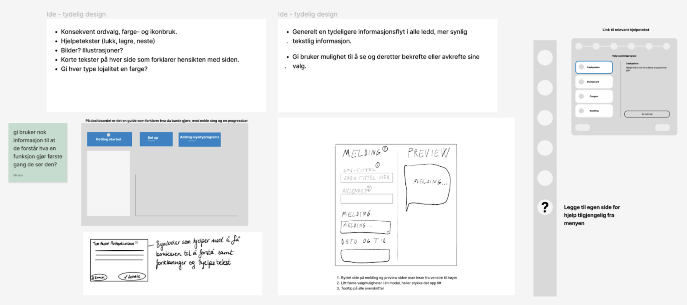
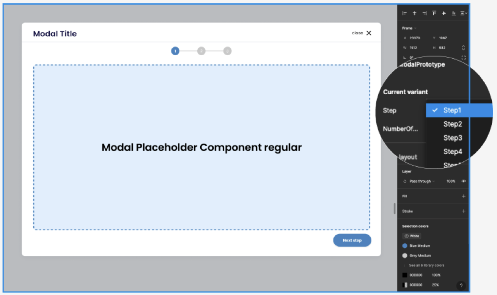
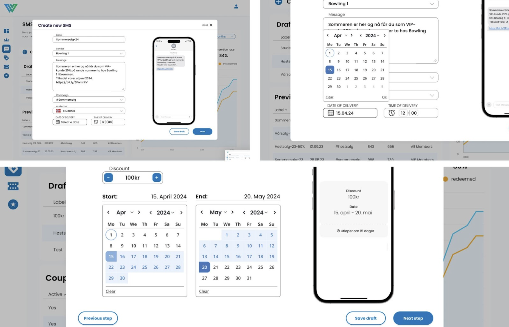

Project Summary
For my Bachelor's project at Wolve IT, my group were asked to make
an onboarding tutorial for their loyalty platform. We learned that
they didn't have a target audience and we thought they neede more
focus on UX. We asked if we could do a full redesign of their
loyalty platform instead, with the goal of eliminating the need for
a tutorial. They thought it was a great idea and we started the
work.
Through detailed market analysis, we identified two target groups
and gathered insights to understand end-users and their needs. Based
on these insights, we designed and implemented a more intuitive and
user-friendly platform using Figma. This resulted in a more
intuitive user experience, increased efficiency, and better
understanding in the use of the platform. The final product is a
prototype of the redesigned platform, which we presented to Wolve
and received great feedback on.
"Bachelorgruppen har levert et prosjekt som har transformert vårt brukeropplevelsesdesign til et fremragende nivå. Gjennom konsekvent bruk av fysiske brukertester og raffinert designstrategi har gruppen sikret høy brukertilfredshet og optimalisert brukerinteraksjon for vår plattform. Deres metodiske tilnærming til design gjennom iterative tester og evalueringer har kraftig forbedret brukervennligheten og estetikken i våre tjenester. De tekniske og visuelle løsningene som er utviklet, spesielt detaljerte brukerinterfaces og interaksjonsdesign, har ikke bare møtt, men overgått våre forventninger. Gruppens eksepsjonelle fokus på brukersentrert design har vært tydelig gjennom hele prosjektet, noe som sikrer at alle designmål ble møtt med innovative og brukervennlige løsninger. Dette prosjektet har ikke bare forbedret vår driftseffektivitet, men også beriket kundeopplevelsen betydelig, og har lagt et solid grunnlag for videre designinnovasjoner. I tillegg har gruppens arbeid mottatt utmerket tilbakemelding fra markedsdirektører, som beskriver det som noe av det beste de noen gang har sett, noe som styrker vår posisjon i markedet og fremhever vår forpliktelse til kvalitet."
Process
Scrum and Insight Work

At the beginning of this project, we planned how to work. The group had experience with Scrum, and based on our preferences, we adopted a hybrid Scrum methodology to manage our project efficiently. Weekly sprints and daily stand-up meetings ensured continuous progress and timely identification of potential obstacles. We also conducted literature research to understand Wolve's business model and the loyalty program market. This helped us identify key challenges and opportunities for the redesign.
Market Analysis


A detailed market analysis helped us define two target groups, one primary and one secondary. We created personas to better understand their needs and preferences, guiding our design decisions throughout the project.
Expert Evaluation and Interviews


We conducted a detailed expert evaluation of Wolve's existing platform, identifying key challenges such as inconsistent design, unclear functionality, and lack of explanatory texts. These insights guided our redesign to improve user experience and interface clarity. We also conducted interviews with users from the target groups to gather feedback on what they would love to have in such a program. This feedback was essential for identifying user needs and preferences.
Problem Identification


We identified problems by individually writing down issues and then voting on the most critical ones. We formulated problem statements that could be solved by the team, leading to the sketching process.
Sketching and Ideation


We began with a thorough sketching process to visualize our ideas and identify key challenges in the existing design. Using rapid prototyping techniques, we generated multiple sketches and refined them through team discussions.
Prototyping



Utilizing Figma, we developed high-fidelity prototypes that illustrated the proposed redesign. These prototypes were essential for user testing and gathering feedback on the user interface.
Applying Design Principles and Universal Design


Throughout the project, we applied Don Norman's design principles and Jakob Nielsen's heuristics. These principles helped optimize user experience by focusing on visibility, feedback, consistency, and user control. We ensured the platform adhered to universal design principles, making it accessible to all users, including those with disabilities. We tested color contrasts and usability across various devices and screen readers.
User Testing

We conducted user tests with representatives from our target groups. Feedback from these sessions informed further iterations of our prototypes, ensuring the design met user needs and expectations.
Iterative Improvements

Based on user feedback, we made iterative improvements to our prototypes. This included refining navigation, enhancing visual coherence, and improving overall usability to better meet user needs.
Future Recommendations
Based on market insights, interviews and user testing, we also provided Wolve with recommendations for future development, including enhancing data analytics capabilities and ensuring scalability for the platform. Regular user testing was also suggested to maintain usability.